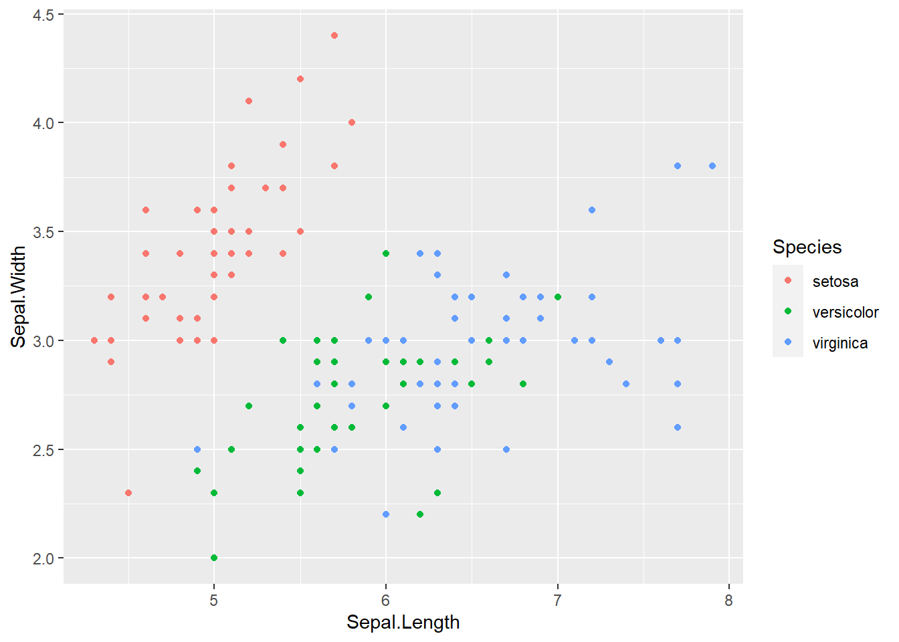
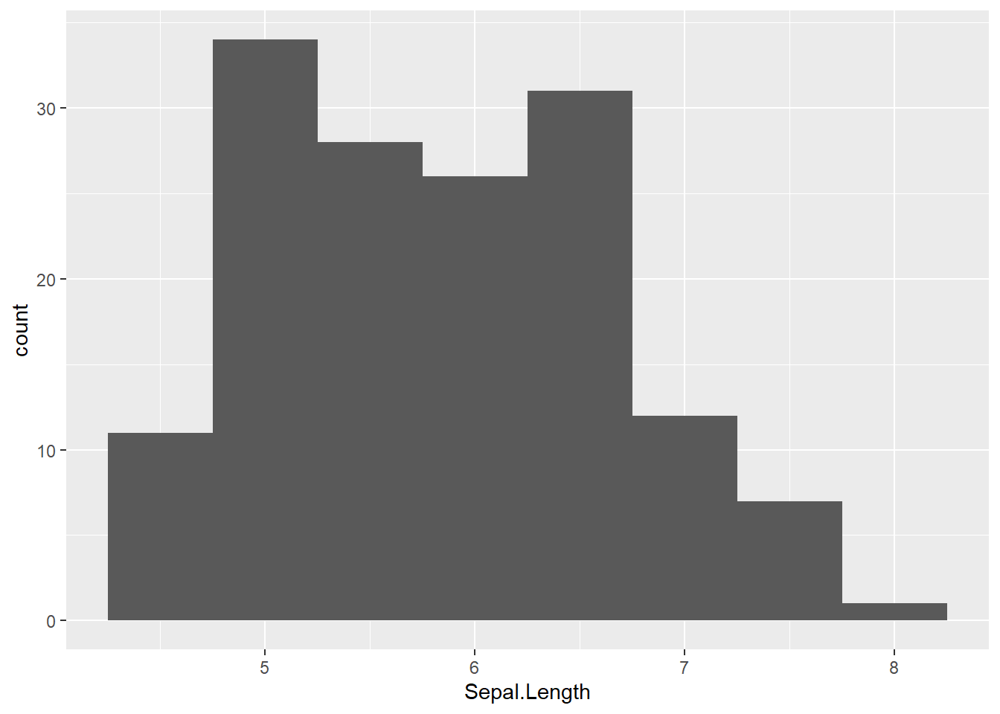
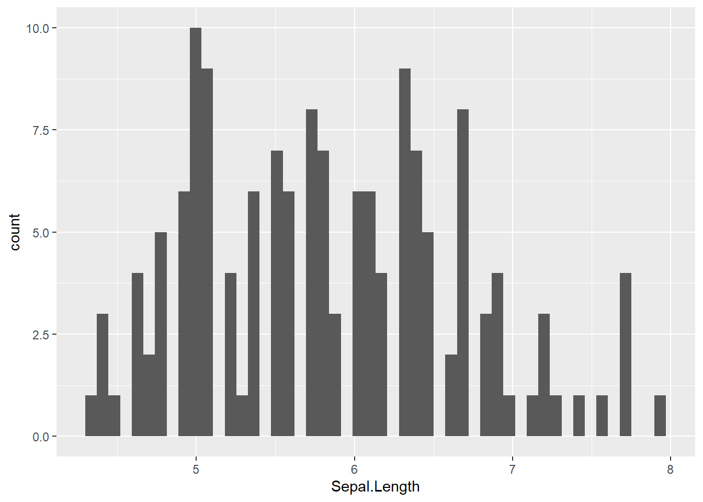
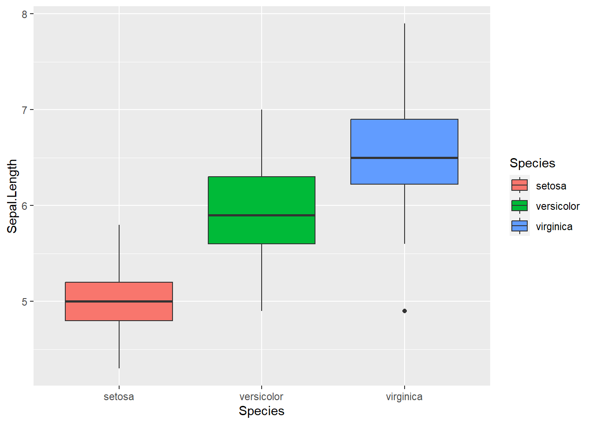

Chapter 11 Appendix: Tidyverse
11.1 Overview
R packages are collections of functions that extend the functionality of the R programming language. They provide a convenient way for users to access and utilize specialized tools for data analysis, visualization, statistical modeling, and more. Among them, tidyverse provides very useful functions for data manipulation and visualization.
tidyverse:: bundles R packages designed to make data manipulation, exploration, and visualization more efficient and intuitive. Developed by Hadley Wickham and other contributors, the Tidyverse packages share a common philosophy and syntax, emphasizing a consistent and tidy data format. The core packages, such as dplyr::, tidyr::, and ggplot2::, provide powerful tools for data wrangling, reshaping, and creating visualizations.
In this Chapter, we will use iris data, which is available by default in R. While the default data structure iris is prepared in data.frame(), I convert this data format to tibble() in this exercise.
library(tidyverse)
iris <- as_tibble(iris)I cover the basics for those who are not familiar with tidyverse::, but there is plenty of documentation available for the tidyverse package.
11.2 Data Manipulation
11.2.1 Data Format
dplyr:: and tidyr:: (and others) offer useful functions for data manipulation. Key manipulations include: row/column manipulations, group operation, reshape, and more.
11.2.2 Row Manipulation
filter(): select/remove rows
# single match "=="
filter(iris, Species == "virginica")
# multiple match "%in%"
filter(iris, Species %in% c("virginica", "versicolor"))
# except "!="
filter(iris, Species != "virginica")
# except multiple "!(x %in% c("a", "b"))
filter(iris, !(Species %in% c("virginica", "versicolor")))
# greater than ">"
filter(iris, Sepal.Length > 5)
# equal & greater than ">="
filter(iris, Sepal.Length >= 5)
# less than "<"
filter(iris, Sepal.Length < 5)
# equal & less than "<="
filter(iris, Sepal.Length <= 5)arrange() : arrange the order of rows
# arrange in an ascending order
arrange(iris, Sepal.Length)
# arrange in an descending order
arrange(iris, desc(Sepal.Length))11.2.3 Column Manipulation
select(): select/remove column(s)
# select one column
select(iris, Sepal.Length)
# select multiple columns
select(iris, c(Sepal.Length, Sepal.Width))
# remove one column
select(iris, -Sepal.Length)
# remove multiple columns
select(iris, -c(Sepal.Length, Sepal.Width))
# select/remove multiple columns with a start rule
# starts_with("x")
select(iris, starts_with("Sepal"))
select(iris, -starts_with("Sepal"))
# select/remove multiple columns with an end rule
# ends_with("x")
select(iris, ends_with("Width"))
select(iris, -ends_with("Width"))mutate(): add column(s)
# add a new column
x <- 1:150
mutate(iris, x = x)## # A tibble: 150 × 6
## Sepal.Length Sepal.Width Petal.Length Petal.Width Species x
## <dbl> <dbl> <dbl> <dbl> <fct> <int>
## 1 5.1 3.5 1.4 0.2 setosa 1
## 2 4.9 3 1.4 0.2 setosa 2
## 3 4.7 3.2 1.3 0.2 setosa 3
## 4 4.6 3.1 1.5 0.2 setosa 4
## 5 5 3.6 1.4 0.2 setosa 5
## 6 5.4 3.9 1.7 0.4 setosa 6
## 7 4.6 3.4 1.4 0.3 setosa 7
## 8 5 3.4 1.5 0.2 setosa 8
## 9 4.4 2.9 1.4 0.2 setosa 9
## 10 4.9 3.1 1.5 0.1 setosa 10
## # ℹ 140 more rows11.2.4 Piping
%>% (pipe) allows sequential operations of multiple functions (shortcut: Ctr + Shift + M). The pipe passes the object to the following function as the first argument.
# the following codes produce the same data frame
# apply functions separately
df_vir <- filter(iris, Species == "virginica")
df_vir_sl <- select(df_vir, Sepal.Length)
print(df_vir_sl)## # A tibble: 50 × 1
## Sepal.Length
## <dbl>
## 1 6.3
## 2 5.8
## 3 7.1
## 4 6.3
## 5 6.5
## 6 7.6
## 7 4.9
## 8 7.3
## 9 6.7
## 10 7.2
## # ℹ 40 more rows# piping
iris %>%
filter(Species == "virginica") %>%
select(Sepal.Length)## # A tibble: 50 × 1
## Sepal.Length
## <dbl>
## 1 6.3
## 2 5.8
## 3 7.1
## 4 6.3
## 5 6.5
## 6 7.6
## 7 4.9
## 8 7.3
## 9 6.7
## 10 7.2
## # ℹ 40 more rows11.2.5 Reshape
pivot_wider() : reshape a data frame to a wide format
iris_w <- iris %>%
mutate(id = rep(1:50, 3)) %>% # add an ID column
select(id, Sepal.Length, Species) %>%
pivot_wider(id_cols = "id", # unique row ID based on
values_from = "Sepal.Length", # values in each cell from
names_from = "Species") # new column names from
print(iris_w)## # A tibble: 50 × 4
## id setosa versicolor virginica
## <int> <dbl> <dbl> <dbl>
## 1 1 5.1 7 6.3
## 2 2 4.9 6.4 5.8
## 3 3 4.7 6.9 7.1
## 4 4 4.6 5.5 6.3
## 5 5 5 6.5 6.5
## 6 6 5.4 5.7 7.6
## 7 7 4.6 6.3 4.9
## 8 8 5 4.9 7.3
## 9 9 4.4 6.6 6.7
## 10 10 4.9 5.2 7.2
## # ℹ 40 more rowspivot_longer(): reshape a data frame to a long format
iris_l <- iris_w %>%
pivot_longer(cols = c("setosa",
"versicolor",
"virginica"), # columns with values to be reshaped
names_to = "Species", # column IDs move to "Species"
values_to = "Sepal.Length") # column values move to "Sepal.Length"
print(iris_l)## # A tibble: 150 × 3
## id Species Sepal.Length
## <int> <chr> <dbl>
## 1 1 setosa 5.1
## 2 1 versicolor 7
## 3 1 virginica 6.3
## 4 2 setosa 4.9
## 5 2 versicolor 6.4
## 6 2 virginica 5.8
## 7 3 setosa 4.7
## 8 3 versicolor 6.9
## 9 3 virginica 7.1
## 10 4 setosa 4.6
## # ℹ 140 more rows11.2.6 Group Operation
group_by() & summarize(): group-by-group operation. summarize() does not retain individual rows.
# grouping by "Species", then take means "Speal.Length" for each species
iris %>%
group_by(Species) %>%
summarize(mu_sl = mean(Sepal.Length))## # A tibble: 3 × 2
## Species mu_sl
## <fct> <dbl>
## 1 setosa 5.01
## 2 versicolor 5.94
## 3 virginica 6.59# grouping by "Species", then take means & SD "Speal.Length" for each species
iris %>%
group_by(Species) %>%
summarize(mu_sl = mean(Sepal.Length),
sd_sl = sd(Sepal.Length))## # A tibble: 3 × 3
## Species mu_sl sd_sl
## <fct> <dbl> <dbl>
## 1 setosa 5.01 0.352
## 2 versicolor 5.94 0.516
## 3 virginica 6.59 0.636group_by() & mutate(): group-by-group operation. mutate() retains individual rows along with summary columns. Do not forget ungroup() to avoid errors in following operations.
# grouping by "Species", then take means "Speal.Length" for each species
iris %>%
group_by(Species) %>%
mutate(mu_sl = mean(Sepal.Length)) %>%
ungroup()## # A tibble: 150 × 6
## Sepal.Length Sepal.Width Petal.Length Petal.Width Species mu_sl
## <dbl> <dbl> <dbl> <dbl> <fct> <dbl>
## 1 5.1 3.5 1.4 0.2 setosa 5.01
## 2 4.9 3 1.4 0.2 setosa 5.01
## 3 4.7 3.2 1.3 0.2 setosa 5.01
## 4 4.6 3.1 1.5 0.2 setosa 5.01
## 5 5 3.6 1.4 0.2 setosa 5.01
## 6 5.4 3.9 1.7 0.4 setosa 5.01
## 7 4.6 3.4 1.4 0.3 setosa 5.01
## 8 5 3.4 1.5 0.2 setosa 5.01
## 9 4.4 2.9 1.4 0.2 setosa 5.01
## 10 4.9 3.1 1.5 0.1 setosa 5.01
## # ℹ 140 more rows11.2.7 Join
left_join(): merge data frames based on column(s)
# matching by a single column
## left join by "Species": one to one
df1 <- tibble(Species = c("A", "B", "C"),
x = c(1, 2, 3))
df2 <- tibble(Species = c("A", "B", "C"),
y = c(4, 5, 6))
left_join(x = df1,
y = df2,
by = "Species")## # A tibble: 3 × 3
## Species x y
## <chr> <dbl> <dbl>
## 1 A 1 4
## 2 B 2 5
## 3 C 3 6# matching by a single column
## left join by "Species": one to many
df3 <- tibble(Species = c("A", "A", "B", "C"),
y = c(4, 5, 6, 7))
left_join(x = df1,
y = df3,
by = "Species")## # A tibble: 4 × 3
## Species x y
## <chr> <dbl> <dbl>
## 1 A 1 4
## 2 A 1 5
## 3 B 2 6
## 4 C 3 7# matching by a single column
## left join by "Species": one to missing
df4 <- tibble(Species = c("A", "A", "C"),
y = c(4, 5, 7))
left_join(x = df1,
y = df4,
by = "Species")## # A tibble: 4 × 3
## Species x y
## <chr> <dbl> <dbl>
## 1 A 1 4
## 2 A 1 5
## 3 B 2 NA
## 4 C 3 7# matching by multiple columns
## one to one
df5 <- tibble(Species = c("A", "B", "C"),
x = c(1, 2, 3),
z = c("cool", "awesome", "magical"))
left_join(x = df1,
y = df5,
by = c("Species", "x"))## # A tibble: 3 × 3
## Species x z
## <chr> <dbl> <chr>
## 1 A 1 cool
## 2 B 2 awesome
## 3 C 3 magical# matching by multiple columns
## one to many
df6 <- tibble(Species = c("A", "A", "B", "C"),
x = c(1, 1, 2, 3),
z = c("cool", "cool", "awesome", "magical"))
left_join(x = df1,
y = df6,
by = c("Species", "x"))## # A tibble: 4 × 3
## Species x z
## <chr> <dbl> <chr>
## 1 A 1 cool
## 2 A 1 cool
## 3 B 2 awesome
## 4 C 3 magical# matching by multiple columns
## one to missing
df6 <- tibble(Species = c("A", "B", "C"),
x = c(1, 2, 4),
z = c("cool", "awesome", "magical"))
left_join(x = df1,
y = df6,
by = c("Species", "x"))## # A tibble: 3 × 3
## Species x z
## <chr> <dbl> <chr>
## 1 A 1 cool
## 2 B 2 awesome
## 3 C 3 <NA>11.3 Visualization
ggplot2:: offers a range of convenient functions for data visualization. The foundational function, ggplot(), provides the initial framework for adding supplementary layers using the + operator. In ggplot(), we define variables plotted on x- and y-axis through aes(). For example:
# without pipe
ggplot(data = iris,
mapping = aes(x = Sepal.Length,
y = Sepal.Width)) +
# additional layers...
# with pipe
iris %>%
ggplot(mapping = aes(x = Sepal.Length,
y = Sepal.Width)) +
# additional layers... Please note that aes() refers to columns in the data frame. Variables names that do not exist in the data frame cannot be used.
11.3.1 Point
geom_point() : Add a point layer
# basic plot
iris %>%
ggplot(aes(x = Sepal.Length,
y = Sepal.Width)) +
geom_point()
# change color by "Species" column
iris %>%
ggplot(aes(x = Sepal.Length,
y = Sepal.Width,
color = Species)) +
geom_point()
11.3.2 Line
geom_line() : Add a line layer
# sample data
df0 <- tibble(x = rep(1:50, 3),
y = x * 2)
# basic plot
df0 %>%
ggplot(aes(x = x,
y = y)) +
geom_line()
11.3.3 Histogram
geom_histogram() : add a histogram layer
# basic plot; bins = 30 by default
iris %>%
ggplot(aes(x = Sepal.Length)) +
geom_histogram()
# change bin width
iris %>%
ggplot(aes(x = Sepal.Length)) +
geom_histogram(binwidth = 0.5)
# change bin number
iris %>%
ggplot(aes(x = Sepal.Length)) +
geom_histogram(bins = 50)
11.3.4 Boxplot
geom_boxplot() : add a boxplot layer
# basic plot
iris %>%
ggplot(aes(x = Species,
y = Sepal.Length)) +
geom_boxplot()
# change fill by "Species"
iris %>%
ggplot(aes(x = Species,
y = Sepal.Length,
fill = Species)) +
geom_boxplot()
# change fill by "Species", but consistent color
iris %>%
ggplot(aes(x = Species,
y = Sepal.Length,
fill = Species)) +
geom_boxplot(color = "darkgrey")